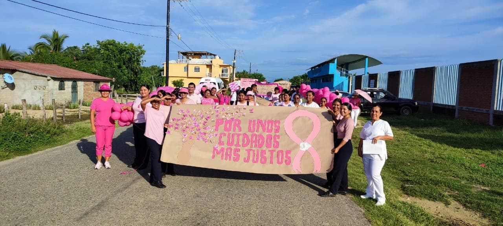
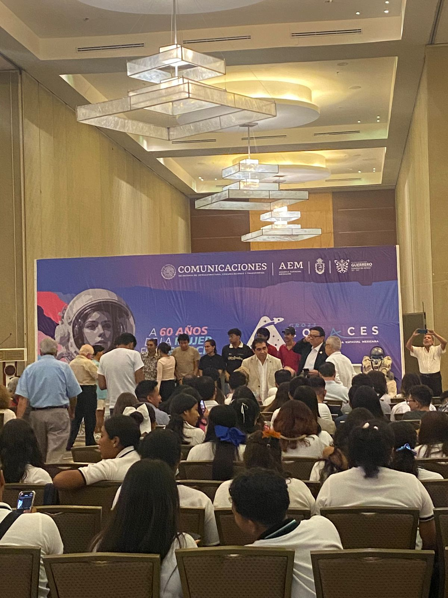

Nuevo
CENTRO DE ACOPIO UTMAR GUERRERO
La Universidad Tecnológica del Mar del Estado de Guerrero tiene instalado en el zócalo de esta cabecera Municipal de Marquelia un Centro de Acopio para apoyar a los damnificados por el huracán "Otis", hacemos la invitación a la población para sumarse a esta acción solidaria, aportando artículos de primera necesidad, alimentos no perecederos, agua embotellada; estaremos recibiendo los insumos hasta las 4 pm.
FECHA DEL EVENTO
31 de octubre, 2023
comentarios
Administrador equipo de 4° de TI

Nuevo
CAMINATA DE CONCIENTIZACIÓN EN EL MARCO DEL DIA MUNDIAL DE LA LUCHA CONTRA EL CÁNCER DE MAMA
UTMAR El mes de octubre se le conoce como el "mes rosa" ya que la OMS lo estableció como el mes de concientizar y fomentar la detección temprana del cáncer de mama.
En el marco del Día Internacional de la Lucha del Cáncer de Mama, la UTMar Guerrero a través del área de psicopedagogía en coordinación con el centro de salud de la comunidad Barra de Tecoanapa realizó una caminata para hacer conciencia en la población que la detección temprana puede hacer la diferencia.
FECHA DEL EVENTO
18 de octubre, 2023
comentarios
Administrador equipo de 4° de TI

Congreso de CONACES
Alumnos de la carrera de Entornos virtuale y Negocios Digitales asisten al congreso de CONACES, en Acapulco Guerrero con la finalidad de aprender mas sobre las nuevas tecnologias que estan por venir, las tecnologias que vimos fueron inteligencia artificial, la formacion de satelites con una presentacion escala con arduino, impresoras 3D explicandonos las funcionalidades que tiene una impresora y los beneficios que tiene una impresora con el material que vamos a utilizar para imprimir las mejores impresoras
y la velocidad con la que imprime, creacion de videojuegos con Unity 3D y otros lenguajes de programación
FECHA DEL EVENTO
18 de Octubre, 2023
Comentarios
Administrador equipo de 4° de TI
LA UTMAR GUERRERO REALIZA EL FORO "MI EXPERIENCIA EN LA ESTADÍA PROFESIONAL"
Con el objetivo de que los estudiantes de los programas educativos de Acuicultura, Turismo, TI, Mecánica y Enfermería conozcan sobre las actividades que se desarrollan en las diferentes empresas e instituciones del sector público, privado y social, se realizó el foro Mi experiencia en la estadía profesional.
Los ponentes del foro fueron los estudiantes:
🔹Pilar Ceballos Muñoz
🔹Edgardo Mayo Carmona
🔹Bibiana Guadalupe Luviano Ramírez
🔹Teresita Hernández Calleja
🔹Leonardo de Jesús Tornéz Monge
El evento se desarrolló por ejes temáticos, en el que los estudiantes conversaron sobre sus experiencias, actividades en la empresa, la elaboración de la memoria de estadía, asimismo de las actitudes, habilidades y valores en la empresa, los retos y situaciones personales que vivieron durante los 4 meses que dura el proceso.
FECHA DEL EVENTO
17 DE Octubre, 2023
Comentarios
Administrador equipo de 4° de TI
CONFERENCIAS EN EL MARCO DEL DIA MUNDIAL DE TURISMO
El día de hoy, en las instalaciones de la Universidad Tecnológica del Mar del Estado de Guerrero, se llevaron a cabo conferencias en el marco del Día Mundial del Turismo con los temas "El Estado de Guerrero hacia la Sostenibilidad Turística" con la participación de la Lic. Kenia García Salinas y la Lic. Erika Bautista Herrera, Directivos de la SECTUR Guerrero; así mismo con la participación del C. Romario Ventura Ibarez con la conferencia "Mi experiencia en la difusión de la gastronomía de la Región Costa Chica", se contó con la presencia del C. Luis Pérez Ventura delegado de turismo de la región.
FECHA DEL EVENTO
5 de Octubre, 2023
Comentarios
Administrador equipo de 4° de TI
PARTICIPA LA ACADEMIA DE ENFERMERIA DE LA UTMAR GUERRERO EN REUNIÓN PARA UNIFICAR LINEAMIENTOS NORMATIVOS DEL CIFRSH
Del 11 al 15 de septiembre del presente año, en la Dirección General de Universidades Tecnológicas y Politécnicas se reunieron todas las universidades que ofertan la Licenciatura en Enfermería con el objetivo de unificar los lineamientos normativos de la Comisión Interinstitucional para la Formación de Recursos Humanos para la Salud (CIFRHS).
Se organizaron mesas de trabajo para revisar los criterios esenciales para evaluar planes y programas de estudio de la Licenciatura en Enfermería y con ello obtener de forma Federal la Opinión Técnica Académica (OTA). Al evento acudió la coordinadora de la Licenciatura en Enfermería M.A.I.S.Mareli Rodríguez Mayo y el Mtro. Feliciano Gaona Rojas miembro de la academia de enfermería y profesor de asignatura.
FECHA DEL EVENTO
21 de Septiembre, 2023
Comentarios
Administrador equipo de 4° de TI